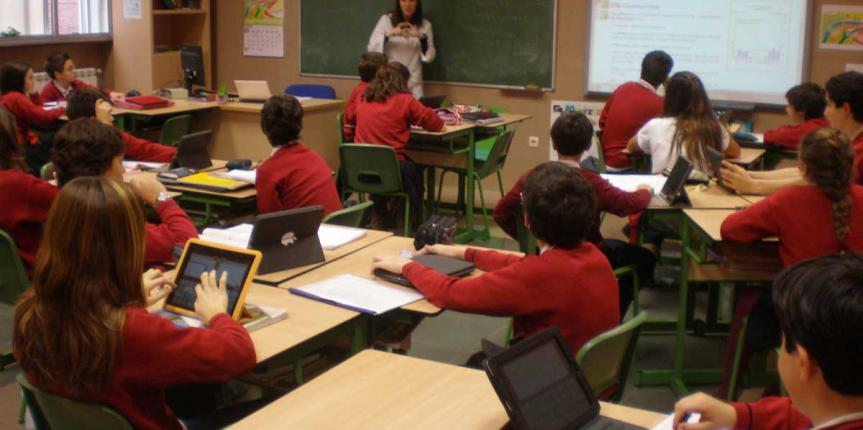
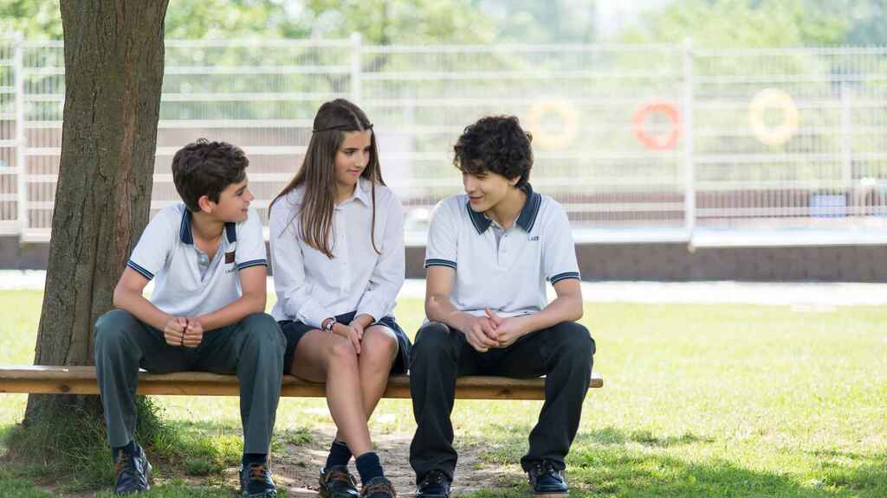
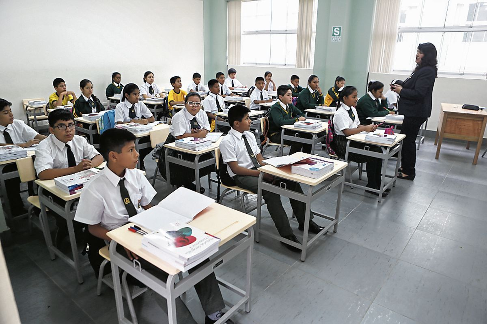
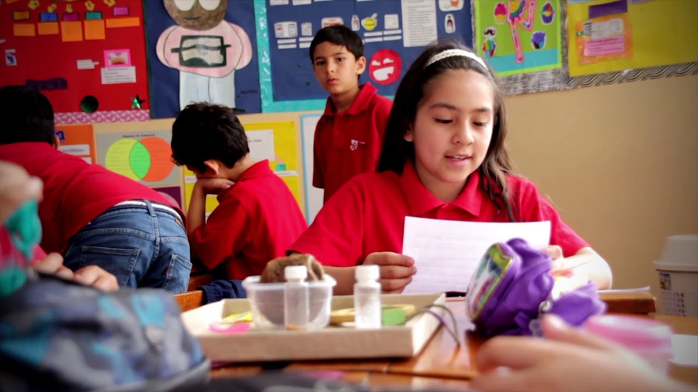

“El colegio Sagrado Corazón abre sus puertas invitándolos a formar parte de nuestra
familia, asi compartiendo con ustedes una propuesta de excelencia académica y valores, en nuestro colegio nos formamos en virtudes,
lo que nos permite dar lo mejor de nosotras mismas, con todas nuestras fuerzas,
buscando siempre hacer el bien cada dia más. ”




“El colegio en el que puedes confiar”
"Nuestros aliados en la calidad de enseñanza e institucional, a nivel nacional y regional"